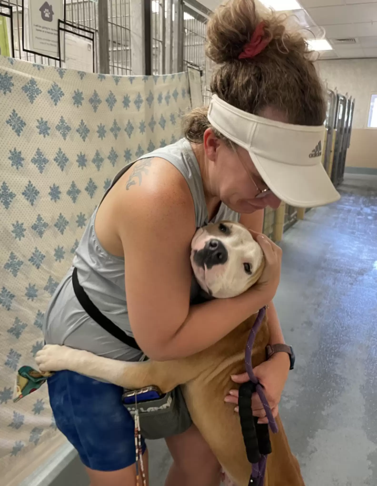

Histórias de quem adotou
Eu adotei um cachorrinho e ele é muito fofo. Ele é muito brincalhão e adora correr no parque.

A adoção de Brandon transformou a vida de Ana, trazendo alegria e propósito aos seus dias, ele encheu sua rotina de amor e leveza.
SOBRE NOSSO SITE
A APAMS, é uma associação Sem fins lucrativos, fundada em 29 de agosto do ano de 2005, que tem como princípio a preservação da Vida. É formada por pessoas que se dedicam para a proteção e bem-estar dos animais, vítimas de maus tratos e/ou abandono. O objetivo primordial da APAMS é tirar os animais das ruas, dar-lhes condições dignas de se recuperarem de enfermidades, tratá-los, vacinar, castrar e reintegrá-los a sociedade através do processo de adoção, inclusive atuando nos casos de maus tratos, agindo em parceria com o Ministério Público, Polícias Civil e Militar para fazer valer a lei federal 9605/98, artigo 32 a qual caracteriza e enquadra o que são crimes ambientais. Sancionada em 29 de setembro de 2020, a Lei 14.064/2020, apelidada de “Lei Sansão” traz mudanças simples, mas que irão fazer grande diferença no trabalho dos protetores de animais.
BREVE RELATO
Há muitos animais abandonados pelas ruas da cidade de Sinop. A associação tem em média 250 animais entre cães e gatos, estes são encontrados perambulando pelas ruas, atropelados, doentes ou em casas, onde são vítimas de maus tratos. Os problemas que a falta de controle desses animais nas ruas causa, são: A proliferação de zoonoses entre animais e pessoas; • Superpopulação de animais pela ausência de um programa de esterilização dos mesmos; • Desnutrição animal, desinformação da população em como cuidar desses animais; • Acidentes de trânsito e demais acidentes como mordidas, etc. Com a ajuda de empresas locais e amantes da causa, a APAMS, desde 2005 vem transformando vidas de milhares de animais, entre cães, gatos e ainda animais silvestres, estes, junto com o IBAMA são tratados e devolvidos ao seu habitat natural. Agimos em defesa dos animais de qualquer espécie que por ventura são abandonados, maltratados ou que vivem nas ruas em situação de perigo. Para isso contamos com o apoio da sociedade, que entra em contato com associação através dos telefones dos voluntários, celular da APAMS, redes sociais, e dessa forma imediatamente verifica-se a veracidade dos fatos, sendo constatado, toma-se providencias cabíveis, tanto para que o animal seja socorrido como para o responsável ser penalizado. As adoções dos animais são realizadas somente, após o animal ter sido tratado, vacinado e castrado, quando a APAMS faz a verificação em loco da pessoa interessada em assumir a responsabilidade pelo animal desejado, constatando que este tem condições, que incluem: um lugar adequado e preparo psicológico para ter um animal, faz-se à documentação da adoção e registra-se com imagens fotográficas, ou seja, trabalhamos para que este animal não volte mais às ruas e principalmente que não volte a procriar. Dispomos de dez funcionários, sendo que estes são responsáveis em cuidar da alimentação, higienização, segurança dos animais, atender pessoas, ministrar medicamentos, observar e contribuir com a reabilitação dos animais tutelados à associação, entre outras atividades administrativas. Todos são devidamente registrados com direitos trabalhistas como está previsto na CLT (Consolidação das Leis Trabalhistas). Além dos funcionários, temos os voluntários que fazem as visitas para futuras adoções e fiscalização de denúncias de maus tratos. Hoje o abrigo da APAMS funciona em um espaço cedido em uma propriedade particular. Lá foram construídas baias que separam os animais por afinidade, também baias de isolamento e maternidade. Porém, essa estrutura é precária e não é adequada para casos de doenças contagiosas, além disso, o espaço pequeno limita o número de animais que precisam ser resgatados. Necessitamos de um espaço maior, adequado às necessidades de nossos animais, pois, muitos nunca serão adotados. Dentre estes, estão os idosos, deficientes físicos e portadores de problemas crônicos. Mesmo com todo esse cenário, jamais deixamos de oferecer nosso melhor para os animais. Além de todos abrigados, também ajudamos diretamente as pessoas que não possuem condições de atendimento veterinário. Oferecemos consultas, exames e em alguns casos, medicamentos para que tratem o animal de acordo com o que foi diagnosticado. Para que nosso trabalho continue e consiga ser realizado de maneira cada vez mais eficiente e consciente, necessitamos de um Abrigo maior, por isso, sempre estamos na luta por mais recursos. Nosso projeto é a construção da sede própria, mais adequada e com maior capacidade, podendo assim atender a um número maior de animais, com melhor qualidade de vida. Estamos longe da perfeição, mas estamos cientes que nosso trabalho merece RESPEITO, afinal, fazemos o nosso melhor em relação a causa.